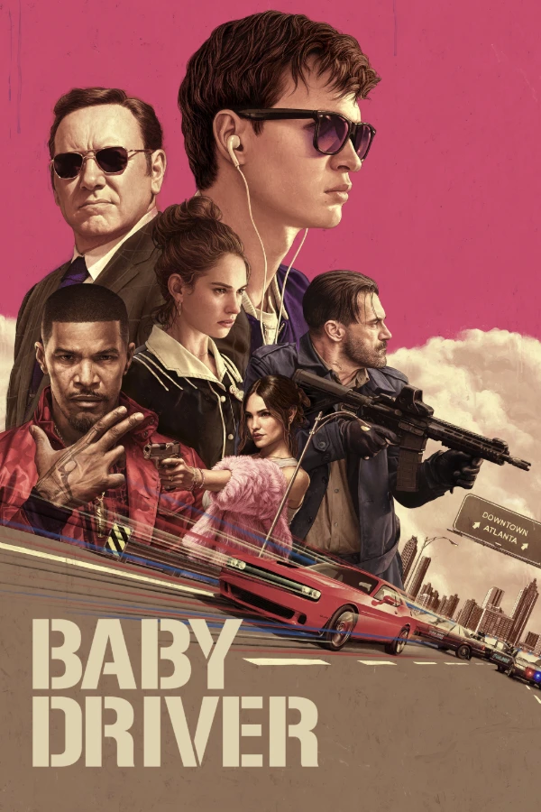

Baby Driver (2017)
ဒီရုပ်ရှင်ကတော့ ဒါရိုက်တာ Edgar Wright ကိုယ်တိုင် ဇာတ်ညွှန်းရေး၊ Co- Produce ပြီးရိုက်ကူးထားတဲ့ Crime Action ဇာတ်ကားကောင်းတစ်ခုပါ။ ဘယ်အချိန် ဘယ်နှခါ ကြည့်ကြည့် မရိုးနိုင်အောင်ခေတ်ရဲ့ဒဏ်ကို အံတုနိုင်တဲ့အပြင် ဝေဖန်ရေးဆရာတွေရဲ့ ချီးမွမ်းချက်တွေနဲ့ ဝင်ငွေပိုင်းမှာလည်း အတော်ကို အောင်မြင်မှုရခဲ့တဲ့ ရုပ်ရှင်တစ်ခုပါ။
ဒီရုပ်ရှင်ကို ရိုက်ကူးဖြစ်တဲ့အကြောင်းကတော့ သူ့အနေနဲ့ သီချင်းများများပါတဲ့ ရုပ်ရှင်တစ်ခုဖန်တီးချင်စိတ်ကနေ စတယ်လို့ဆိုပါတယ်။ သီချင်းကိုလည်း နောက်ခံသီချင်းအနေနဲ့သုံးချင်တာမဟုတ်။ သူရိုက်ကူးခဲ့တဲ့ Scott Pilgrim vs. the World လို ဂီတကိုတည်ရိုက်တာလည်းမဟုတ်တဲ့ ရုပ်ရှင်ဇာတ်ကားမျိုးပေါ့။ ဒီနေရာမှာ Baby Driver က သူ့အမြင်နဲ့ကွက်တိကျတဲ့ပုံစံမျိုးကို တည်ခင်းနိုင်ခဲ့ပါတယ်။
Baby Driver ဆိုတဲ့ ရုပ်ရှင်နာမည်အတိုင်း အဓိကဇာတ်ကောင်က Baby။ Baby က Driver။ ရွက်ကြမ်းရေကျို ကားသမားမျိုးတော့မဟုတ်ပါဘူး။ ကားဒက်ရှ်ဘုတ်ကို ကျော်မြင်နိုင်တဲ့အရွယ် ငယ်ငယ်ကတည်းက ကားတွေနဲ့ လိုက်မွှေလာတဲ့ ဆရာကြီးတစ်ယောက်ပါ။ သူ့ကိုတော့ ဒေါက်တာဆိုတဲ့ဘဲကြီးတစ်ပွေက လာဘ်ကောင်လေးလို့သဘောထားပြီး ဓားပြတိုက်တဲ့အခါတိုင်း ကားဆရာအနေနဲ့သုံးပါတယ်။ သုံးတဲ့အခါတိုင်းလည်း မလွတ်မရှိ။ ရအောင်ပြေးလွတ်ခဲ့တာပါပဲ။
သူနဲ့ သီချင်းတွေ ဘယ်လိုတွဲမလဲဆိုတဲ့မေးခွန်းအပေါ် ဒါရိုက်တာမှာ အဖြေကောင်းကောင်းတစ်ခုရှိပါတယ်။ ငယ်ငယ်က ကားမတော်တဆမှုတစ်ခုကြောင့် နားအူရောဂါခံစားနေရတယ်ဆိုတဲ့ အကြောင်းပြချက်တစ်ခုကိုပေးလိုက်တာပေါ့။ ဒါကြောင့် ဘေဘီဟာ အချိန်ပြည့်သီချင်းနားထောင်ရတယ်။ ကြည့်တဲ့လူတွေကလည်း သူနဲ့အတူ သီချင်းထဲ လိုက်မျောခွင့်ရတယ်။ သီချင်းတွေကလည်း ပေါတိပေါချာတွေမဟုတ်ဘူး။ တကယ့်သီချင်းတွေကို ဇာတ်လမ်းနဲ့အညီ အံဝင်ခွင်ကျသုံးပြီး သီချင်းအကြောင်းမဟုတ်တဲ့ ဂီတ ဆန်ဆန် ရုပ်ရှင်တစ်ခုကို သူသွန်းလုပ်ခဲ့တာမျိုးပေါ့။
ဇာတ်လမ်းအသွားကလည်း မမြန် မနှေးနဲ့ သိပ်ကိုအရသာရှိတဲ့ စီးဆင်းမှုမျိုးရှိပါတယ်။ ရိုက်ကွက်တွေကတော့ ပြောဖို့လိုမယ်မထင်ပါဘူး။ ဇာတ်လမ်းအစကနေ အဆုံး ပျင်းချိန်ကိုမပေးဘဲ ပြီးတဲ့အထိ စိတ်လှုပ်ရှားစရာကောင်းအောင် ဆွဲခေါ်သွားနိုင်ပါတယ်။
Baby နေရာကသရုပ်ဆောင်တဲ့ Ansel Elgort ကလည်း စကားနည်းနည်းနဲ့ နားလည်ရခက်တဲ့ ဇာတ်ကောင်မျိုးကို ပီပြင်အောင်သရုပ်ဆောင်ထားနိုင်ပါတယ်။ အဲဒီအတွက်လည်း Best Male Newcomer award ကိုရရှိခဲ့ပါတယ်။
ဒီရုပ်ရှင်နဲ့ပတ်သက်တဲ့ဆုတွေကို စာရင်းချရရင် အတော်ကိုရှည်သွားပါလိမ့်မယ်။ အော်စကာ ဆန်ခါတင် ၃ ဆုအပြင် အခြားဆုပေါင်း ၄၃ ခုကိုရရှိခဲ့ပြီး ဆန်ခါတင်အနေနဲ့ ၆၃ ဆုဝင်ထားပါတယ်။ သရုပ်ဆောင်၊ စတန့်၊ ရုပ်ရှင်ဓာတ်ပုံ၊ သီချင်း ဘာဆုနေနေ ဆုရတာမဟုတ်ရင် ဆန်ခါတင်ကတော့ပါပြီးသားပါပဲ။ အဲဒီလောက်ကိုကြမ်းတာပါ။
သီချင်းနားထောင်ရင်း ကားမောင်းရတဲ့ခံစားချက်က ဘယ်လောက်မိုက်သလဲ မပြောလည်းသိမှာပါ။ မသိသေးရင်တော့ ဒီရုပ်ရှင်ရဲ့ ဇာတ်လမ်းကောင်းကောင်းထဲ သီချင်းလေးတွေနဲ့ စီးမျောကြည့်ကြပါဦး။